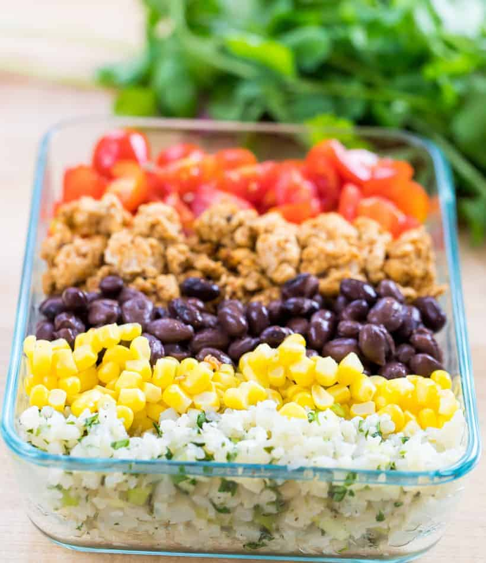

Chicken Burrito Bowl

Description:
Chicken burrito bowls are packed with ground chicken, cilantro lime cauliflower rice, black beans, corn and tomatoes. They are perfect for meal prep and make a great lunch or easy dinner for busy weekdays.
Ingredients:
1/4 cup low sodium chicken broth
2 tablespoons taco seasoning
340g black beans, drained and rinsed
330g frozen corn, defrosted
475g cherry tomatoes, quartered
30g Chipotle in adobe sauce
Steps:
Heat one teaspoon of oil into a large non-stick saute pan. Toss in garlic with a pinch of salt and sauté until fragrant.
Add cauliflower rice to the pan along with salt, pepper and chicken broth (or water). Pop on the lid and cook for 3-4 minutes or until the rice is tender.
Transfer to a bowl and allow to cool before stirring in scallions, cilantro and lime juice. Set aside.
Heat a large non-stick saute pan over a medium heat, add in remaining oil and ground chicken. Season with salt and pepper and break into crumbles with a rubber or wooden spatula until the chicken is in crumbles.
Once the chicken has turned from translucent to opaque, add in taco seasoning and stir to coat the chicken with the spices. Cook for a couple more minutes or until chicken is cooked through. Shut off the heat and allow to cool.
Once all of your ingredients are prepped and ready to go, you are ready to assemble your bowls.
Starting on one side of your meal prep container, layer cauliflower rice, corn, black beans, chicken and tomatoes. Repeat until you make 4 burrito bowls.
*OPTIONAL: combine greek yogurt, chipotle sauce and lime juice. Mix well!
Store burrito bowls in the fridge for up to 5 days. Top with yogurt sauce before eating. Enjoy!